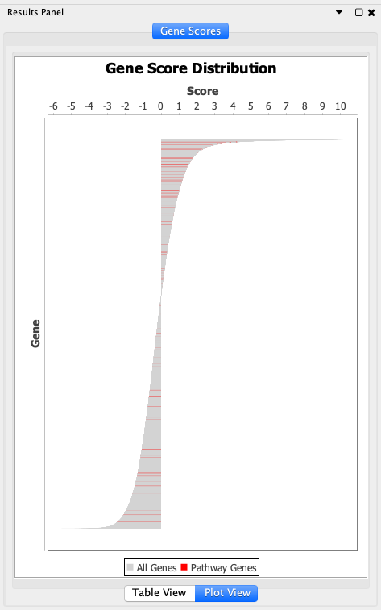
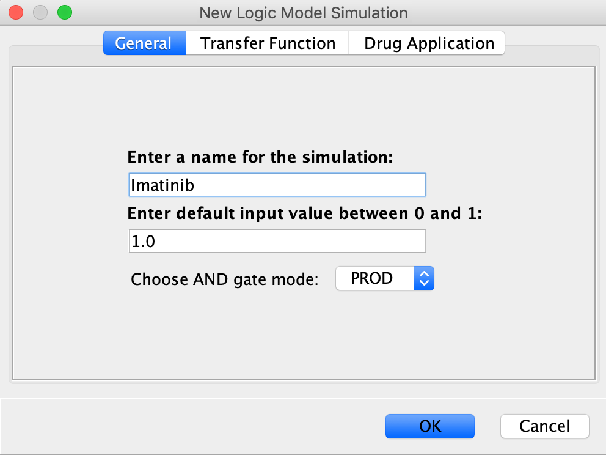
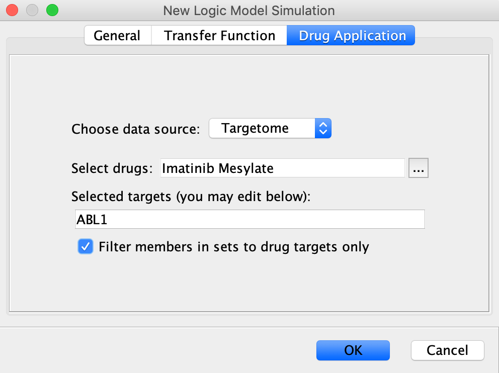

Overview
The ReactomeFIViz app is designed to find pathways and network patterns related to cancer and other types of diseases. This app accesses the Reactome pathways stored in the database, help you to do pathway enrichment analysis for a set of genes, visualize hit pathways using manually laid-out pathway diagrams directly in Cytoscape, and investigate functional relationships among genes in hit pathways. The app can also access the Reactome Functional Interaction (FI) network, a highly reliable, manually curated pathway-based protein functional interaction network covering over 60% of human proteins, and allows you to construct a FI sub-network based on a set of genes, query the FI data source for the underlying evidence for the interaction, build and analyze network modules of highly-interacting groups of genes, perform functional enrichment analysis to annotate the modules, expand the network by finding genes related to the experimental data set, display pathway diagrams, and overlay with a variety of information sources such as cancer gene index annotations. Recently we have also added features to help users visualize FDA-approved cancer drugs in the contexts of the FI network and Reactome pathways, and use Boolean network models directly built from Reactome pathways to investigate potential functional impacts of displayed cancer drugs.
For an example how we use Reactome FIs for cancer data analysis, please see our publication: A human functional protein interaction network and its application to cancer data analysis.
Download and Launch ReactomeFIViz
ReactomeFIViz app 6 needs Cytoscape 3.7.0 or above. If you have not installed Cytoscape 3.7.0 or above, please download it from Cytoscape's web site: http://www.cytoscape.org. After launching Cytoscape, use menu "Apps/App Manager" to open the "App Manager" dialog, and search for "ReactomeFI". You should see the ReactomeFIViz app listed in the middle panel (See the Figure below. You may see a different version number. Note: The listed name of this app is "ReactomeFIPlugIn", which is the original name of the app.). Choose the app, and then click the "Install" button at the bottom of the dialog. Follow the procedures to finish the installation.
Install ReactomeFIViz app From App Store
Use Reactome Pathways
Using the pathway visualization and analysis features, you can load pathways in the Reactome database into Cytoscape, visualize Reactome pathways in either the native pathway diagram view or the FI network view, do pathway enrichment analysis for a set of genes, and check genes from your list in hit pathways.
Explore Reactome Pathways
- Load Reactome pathways: Use menu "Apps/Reactome FI/Reactome Pathways" to load pathways into Cytoscape. The loaded pathways are organized in a hierarchical way as in the Reactome web application (https://reactome.org/PathwayBrowser/), and listed in the left side "Control Panel" in the tab called "Reactome".
- View pathways in Reactome: After selecting a pathway in the pathway hierarchy, you can choose "View Reactome Source" from the popup menu (right click in Windows or Control-click in Macs to get the popup menu)
to view its detailed annotation in Reactome. Or you can choose "View in Reactome" to view the detailed information in the Reactome web application.
Note: The ancestor pathways (container pathways) for a selected pathway are displayed in the middle panel, "Selected Event Branch", in the Reactome tab. You can click an ancestor pathway in this middle panel to view the clicked pathway's location in the original pathway hierarchical tree. However, the ancestor pathway will not be selected in the original tree. This is a designed behavior to keep the selection in the original tree.
- Search pathways: Choose "Search" in the popup menu to bring up the search dialog. The found pathway(s) will be highlighted in blue in the pathway tree.
Note: Search will be against all loaded pathways, not limited to the selected pathway and its contained sub-pathways.
- Open Reactome Reacfoam: The Reacfoam view provides a holistic view of all (exclude disease) human pathways in the Reactome database. Choose "Open Reactome Reacfoam" in the popup menu to open the Reactome Reacfoam in the default browser.
Note: Pressing your mouse and then holding it to a pathway box will select the pathway in the tree of ReactomeFIV automatically.

Reactome Reacfoam
- Open pathway diagram: Pathways in Reactome are organized in a hierarchical way. Not all pathways have their own pathway diagrams. A smaller pathway (called sub-pathway) may be drawn in a bigger pathway, which has its own pathway diagram. Most of top-level pathways (called modules or super pathways) are used to organize related pathways (e.g. Disease, Signaling Transduction), and therefore contain only rectangle boxes representing canonical pathways.
- Show Diagram: If a selected pathway has its own pathway diagram, you can choose "Show Diagram" in the popup menu to open its pathway diagram into the central Cytoscape desktop.
- View in Diagram: If a selected pathway is laid-out as a sub-pathway in a bigger one, you can choose "View in Diagram" in the popup menu to view its drawing in its container pathway. Reactions contained by the selected pathway will be highlighted in blue after the diagram is opened. For example, see pathway "G1/S DNA Damage Checkpoints" opened in pathway "Cell Cycle Checkpoints" below:
- Search diagram: Objects displayed in a pathway diagram can be searched using "Search Diagram" from the popup menu (Right click in Windows or Control click in Macs without selecting any object in the pathway diagram to get the popup menu). The found objects will be selected and highlighted in blue.
Note: Reactions will not be searched in the diagram. Use the search feature in the pathway tree to search for reactions.
- Export diagram: Displayed diagram can be exported as a PDF, JPG or PNG file. Use "Export Diagram" from the popup menu to export the displayed diagram.
- View Reactome Source or View in Reactome: Select an object, and then right-click (or control click) to get the popup menu. Choose "View Reactome Source" to view the detailed annotation for the selected object in a table (See Figure below for an example). Or choose "View in Reactome" to view the selected object in the Reactome web application.
- List Genes: Genes contained by a complex or protein set, or a gene related by a displayed protein can be viewed by using a menu item "List Genes" after selecting an object. For example, the following dialog shows genes contained by complex hBUBR1:hBUB3:MAD2*:CDC20. Clicking a gene symbol will bring you to the web page for that gene in the GeneCard web site.
Display Reactome Pathways in the FI Network View
- Display pathway in the FI network view: A Reactome pathway can be converted into a functional interaction network using the method we have established (see A human functional protein interaction network and its application to cancer dat analysis). Use "Convert to FI Network" in the popup menu brought up by right-clicking (Windows) or control-clicking (Macs) an empty area without any selection in the pathway diagram panel. The original pathway diagram will be moved to the bottom-left corner, and a new FI network will be generated based on the original pathway diagram, which will be displayed in a new network panel.
Note: sub-pathways contained by the displayed pathway will be extracted into the FI network too.
Pathway in the FI Network View
- Explore objects in the pathway and network views: Object selection in three views has been synchronized. Objects that can be selected include: events in the pathway tree view, objects in the pathway view at the bottom-left corner, and genes and FIs in the network view. You can select an object in one of three views, and corresponding objects in other two views should be selected too. Also you should use features implemented in popup menus in each individual view to explore objects as in a single view.
Note: Using Cytoscape's built-in "Saving Session" feature can save the converted FI networks from pathways. However, displayed pathways cannot be saved into a session file for the time being. We will implement this function in a future release.
Pathway Enrichment Analysis
- Pathway enrichment analysis: A list of genes can be used to check if any of Reactome pathways have been enriched. To do this, use the popup menu item, "Analyze Pathway Enrichment" (below left figure), to get the dialog for choosing a gene set file (below right figure). You can use a gene set file in one of three file formats: one gene per line, all genes in the same line and delimited by commas, or all genes in the same line and delimited by tabs. You can also manually input genes by clicking the "Click to Enter" button (one line for one gene).
Note: Dependent on the size of your gene list, it may take over 1 minute for running the pathway enrichment analysis. Pathways used in this feature are different from Reactome pathways for annotating a FI network or network modules. Here all over 2,000 pathways are used. For annotation, only a subset of Reactome pathways, which have been pre-selected for a certain size, are used.

Note: To get a holistic view of the pathway enrichment analysis results, open the Reactome Reacfoam after the analysis using the popup menu "Open Reactome Reacfoam" for the pathway tree. You may also download the Reacfoam view by clicking the download button at the top-right corner. For windows 10 users, to open the Reacfoam view, you need to allow "public" access to Cytoscape by checking "public" in the settings for "Allow an app through Windows Firewall" in the "System and Security" control settings.
- View enrichment analysis results: Pathway enrichment results are displayed as a table labeled as "Reactome Pathway Enrichment" in the "Table Panel" at the bottom of the main Cytoscape window. You can use "Views in Diagram" to view hit pathways in the pathway diagram view, and use "Export Annotations" to save the results in the table. Pathways in the Reactome pathway tree are highlighted in different colors based on their FDR values. Objects containing genes from your gene list are highlighted in a purple background with a white font in the pathway diagram view. Hit genes are displayed in a thick purple border in the FI network view for a hit pathway.
Note: Hit genes are displayed with same colors in the "Gene List" dialog from the "List Genes" feature.
Pathway Enrichment Results
- Perform GSEA analysis: Gene Set Enrichment Analysis (GSEA) is a rank-based pathway enrichment analysis approach, widely used in pathway-based data analysis. ReactomeFIViz provides support to perform GSEA analysis for Reactome pathways using a gene score file. Gene score may be t-score from differential gene expression analysis or other type of scores that can be ranked. To perform the GSEA pathway enrichment analysis, you need to provide a tab-delimited text file containing two columns: the first for gene symbols (human only) and the second for gene scores. The first row is reserved for the column headers, and will not be imported for analysis. To perform GSEA analysis, use popup menu "Perform GSEA Analysis" in the pathway tree to bring up the GSEA configuration dialog, where you can enter the gene score file and choose the minimum and maximum size of pathways along with the permutation number.
Perform GSEA Analysis
Configure GSEA Analysis
The GSEA analysis results are displayed in the table labeled as "Reactome GSEA Analysis" in Cytoscape Table Panel. Pathways subject to GSEA analysis in the pathway tree are highlighted based on FDR values as in the gene set-based pathway enrichment analysis (See above). For details about the meanings of columns shown in the results table, please consult the original GSEA document: GSEA Document.
- Overlay Gene Scores onto Pathways: For significant pathways produced from the GSEA analysis, you can overlay gene scores to investigate locations of products of genes having significant high or low scores, therefore to understand potential pathway activity impact caused by these extreme scores. To do this, use popup menu "Overlay Gene Scores" in pathway diagram view to choose the gene score file in the configuration dialog. After the file loading, entities in pathway diagrams will be highlighted based on scores. You may choose one or more genes in the right gene scores Table View to visualize related entities in the pathway diagram.
Overlay Gene Scores
Gene Score Overlay Results
Note: If an entitiy (e.g. a complex or an EntitySet) is composed of more than one gene, the score for the entity is the mean of all genes annotated for that entity. To remove overlaid gene scores in the pathway diagram, use popup menu "Remove Gene Scores". To view the distribution of scores for genes annotated in the displayed pathway diagram, choose "Plot View" in the "Gene Scores" tab in Cytoscape Results Panel (see below).

Gene Score Distribution
Probabilistic Graphical Model based Pathway Analysis
We adapted the PARADIGM approach for Reactome pathways by converting reactions drawn in pathway diagrams into factors in factor graphs, a type of probabilistic graphical models (PGMs). For details about the PARADIGM approach, see: Inference of patient-specific pathway activities from multi-dimensional cancer genomics data using PARADIGM. For introduction to factor graphs, see this wikipedia entry: Factor Graph. For test purposes, you can download two sample data files for 100 TCGA ovarian cancer patients: CNVs and mRNA gene expression. The original TCGA OV files were downloaded from the Broad Institute Firehose web site.
- Run graphical model analysis in batch: This feature is used to perform a batch graphical model analysis for all Reactome pathways having manual layout diagrams.
- Start the analysis: Choose the popup menu, "Run Graphical Model Analysis", in the pathway hierarchical tree. After choosing this menu, you will be asked to choose data files and provide parameters for inference algorithms in the following two tabs in the "Run Graphical Model Analysis" dialog:
Notes:
1). If you choose "Use empirical distribution" in the data loading dialog, your loaded data will be used directly to construct factor functions without discretizing. At present, we recommend to use "Choose threshold values for discretizing".
2). It is recommended to use the default parameters for inference algorithms for a batch analysis for quick performance. You can try different parameters for some specific pathways after you find interesting pathways from the batch analysis. If you want to perform two-case study (e.g. case-control, drug sensitive/insensitive, etc), check the checkbox, "Used for pathway analysis for samples with two cases", and provide a sample information file as required. For two-case analysis, a random data set will not be generated. Results will be presented by comparing two types of samples in your uploaded data files.
- Run the analysis: Click the "OK" button to start the batch analysis. Depending on your sample size, it may take hours to finish the whole analysis.
- Finish the analysis: After the batch analysis done, you may see the following list if some of pathways cannot be analyzed because the inference algorithm cannot converge. Please make sure the following list is small (probably less than 10 pathways) so that you can get enough results.
- View the results: The results from the batch analysis are displayed at the bottom table panel of the Cytoscape desktop as the following:
Note: There are 7 columns in this table: ReactomePathway for pathway names analyzed by the App; AverageUpIPA shows how much a pathway is up-perturbated by comparing to a random background (IPA: integrated pathway activity. See the above PARADIGM paper for details); AverageDownIPA shows how much a pathway is down-perturbated; CombinedPValue is a p-value indicating how significant this pathway is perturbed based on pathway outputs and the Fisher's method; MinimumPValue is the minimum p-value for pathway outputs; the last two columns are FDRs for two p-values based on the Benjamini–Hochberg method. AverageUpIPA or AverageDownIPA may be NaN, which indicates there is no detected up or down perturbation based on this analysis. The FDR filtering works based on the FDR values displayed in the last two columns with "OR" operation.
- Save the results: To keep the results, use the popup menu in the table, "Export Annotations", to save the results into an external text file. The saved results can be loaded later on by using popup menu, "Load Graphical Model Results", in the pathway tree.
- Run graphical model analysis for a single pathway: This feature is used to perform a graphical model analysis for a pathway displayed in the Cytoscape desktop.
- Open a pathway: As before, you can choose a pathway in the pathway tree, and open its diagram in the Cytoscape desktop. Or you can choose an interesting pathway from the batch analysis results table by choosing popup menu, "View in Diagram".
- Start the analysis: Choose popup menu, "Run Graphical Model Analysis", from the popup menu list in the pathway diagram window. You will be asked to provide data files and set up inference algorithms as in the batch analysis. After clicking the "OK" button, you will be asked to provide a list of escape names for entities in the pathway that will not be considered in the graphical model (e.g. ATP, ADP, etc) in the following dialog:
Note: If you have loaded data files, you may choose to use the loaded data files without displaying the data loading dialog.
- View the results: After the analysis is done, three tabs are displayed in the table pane of Cytoscape: IPA Pathway Analysis, IPA Sample Analysis and IPA Node Values. IPA Pathway analysis displays inference results for entities in the pathway by comparing samples in your data files and in a random data set generated dynamically by the App based on your data files. IPA Sample Analysis shows results for each individual samples as up or down perturbation. You may choose to show/hide p-values and FDR values for samples in the table. IPA Node Values show inference results for selected entities in the pathway diagram for each sample. Entities in the pathway diagram are highlighted based on values in the MeanDiff column in the IPA Pathway Analysis tab.

CellCycleCheckPointsResults
Note: You may change the color spectrum mapping for pathway diagram highlighting by double-clicking the color spectrum bar at the bottom of pathway diagram window to get the dialog for setting min/max values. You can save the analysis results for a pathway by using popup menu, "Save Analysis Results", and load the results back later on by "Open Analysis Results".
- Analyze gene level results: The up or down perturbation results are inferred based on genomic data files for individual genes. The App provides features to analyze observation results and inference results for individual genes. You can view gene-level observation and inference results for the whole pathway by using popup menus, "Show Gene Level Analysis Results" and "Show Observations". You can also view these results for genes contained by an entity displayed in the pathway diagram after selecting that entity and then using these two popup menus. The following two dialogs show gene level observations and inference results for genes whose products are contained by complex "hBUBR1:hBUB3:MAD2*:CDC20 complex [cytosol]" in the cell cycle checkpoints pathway:
GeneLevelResultsForEntity
- Analyze and visualize results for individual samples: The inference results and loaded observation data are displayed in the right "Results Panel" (see below). By checking "Highlight pathway for sample", entities in the displayed pathway diagram will be highlighted based on inferred IPA values for the selected sample displayed in the "Choose sample" box. You can also enable animation by clicking the play button. There are two tabs in the "Results Panel": "Inference" for showing inferred IPA values, and "Observation" tab for loaded observed data related to entities in the pathway (Note: if you choose "discretizing", the displayed observation values are discretized: 0 for lower than normal, 1 for normal, and 2 for higher normal). Objects in three views (pathway diagram, inference table, and observation table) are synchronized for selection.
PGM Sample View: Inference
PGM Sample View: Observation
- Compare analysis results for two samples: You can compare observation data and inference results for two samples. To do this, choose two samples in the "IPA Sample Analysis" tab in the bottom results pane, and use popup menu "Compare Samples" to bring out another tab called "Sample Comparison". You can view comparing results for inference and observation data.
Boolean Network based Pathway Analysis
We have developed an approach (Manuscript in preparation) to convert biochemical reactions-based Reactome pathways into Boolean networks and then perform pathway simulation based on the constrained fuzzy logic method according to Training Signaling Pathway Maps to Biochemical Data with Constrained Fuzzy Logic: Quantitative Analysis of Liver Cell Responses to Inflammatory Stimuli and Querying quantitative logic models (Q2LM) to study intracellular signaling networks and cell-cytokine interactions. Based on this approach, the user can perform pathway simulation inside Cytoscape using rich Reactome pathways based on fuzzy logic built upon Boolean networks.
- Set up and run logic model simulation: Choose popup menu "Run Logic Model Analysis" in the Pathway Diagram View to get the New Simulation dialog. Enter a name for the simulation and the default value, which usually should be 1.0 to enable that the simulation can proceed, and then choose either PROD or MIN for the AND gate mode (the default choice PROD usually should be fine).
Note: You may also choose an Transfer Function and adjust parameters for Hill function. However, for simplicity, it is suggested to use "Identity Function" first. For how to apply drugs for logic model simulation, see below.
Run Boolean Network Analysis
After clicking the OK button in the New Simulation dialog, the default initial configuration will be displayed in the Results Panel. You may change the variable Type and Modification in the set up table by clicking the cell for the selected variable. To run the simulation, click the Simulate button in the Results Panel.
Set up Boolean Network Analysis
Choose BN Modification Type
- Visualize the simulation results: After the simulation is done, entities in the pathway diagram will be highlighted based on simulated values, which should be between 0 and 1. You may choose one or more entities to visualize their temporal behaviors inside the Table Panel at the bottom of Cytoscape. Attractors computed from the simulation are also listed in the right columns in the original set up table inside the Results Panel. Note: After simulation, you will not be able to modify any initial configuration.
Boolean Network Simulation Results
Note: To avoid clutter, if too many time steps have been generated for a logic model simulation, only the last 20 time steps are displayed in the table. However, the plot shows all time steps. You may choose different columns to display in the table by use popup menu "Configure Columns" after selecting any variables in the table.
- Perform pathway simulation via modification: Simulation with Boolean network can help users uncover the impact of modification of entity activities (e.g. inhibition or activation caused by somatic mutation) on the pathway behaviors. For example, in PIP3 activates AKT signaling, Complex AKT:PIP3 forms a complex with EntitySet THEM4/TRIB3 to form another complex, which inhibits the activation of AKT (For details see Reactome PIP3 activates AKT signaling). To perform simulation with modification, choose modification type in the simulation set up table and assign the strength to the modification.

Choose Inhibition for Boolean Network Simulation
Clicking the Simulate button invokes the constrained fuzzy logic model simulation with this configured inhibition. You can compare the simulation results between the two configurations by selecting an entity and then toggling the simulation result tables at the bottom of Cytoscape.
Active AKT in Inihibition
You can also use the "Compare" button in the Results Panel to get the comparison dialog and then choose two simulations for comparison. The comparison results are displayed in a new table listed at the bottom Table Panel.
Note: The RelativeDifference in the comparison result table is calculated based on relative change for each fuzzy logic variable, calculated as (valueInSim2 - valueInSim1) / (valueInSim2 + valueInSim1). The time course may be interpolated based on the attractor until this relative difference converges.
- To remove all displayed constrained fuzzy logic simulation results, use popup menu, "Remove Analysis Results" under "Run Logic Model Analysis". The pathway diagram should be reset to the original colors, and all tables related to logic model simulations will be deleted.
Use the Reactome Functional Interaction (FI) Network
After the ReactomeFIViz app installed, you should see a menu item called "Reactome FI" under the Apps menu. Clicking this menu, you will see 6 sub-menus: Gene Set/Mutation Analysis, PGM Impact Analysis, Microarray Data Analysis, Reactome Pathways and User Guide. Gene set/mutation analysis is for doing FI network-based data analysis for a set of genes or a mutation data file, PGM Impact analysis for performing functional impact analysis based on a probabilistic graphical model for the Reactome FI network using multiple omics data types, HotNet mutation analysis for the HotNet algorithm to search for network modules (see http://compbio.cs.brown.edu/projects/hotnet/), microarray data analysis for doing MCL (Markov Graph Clustering, http://micans.org/mcl/) based FI network clustering analysis by converting a non-weighted FI network to weighted network using correlations among genes in the network, Reactome pathways for loading pathways from the Reactome database, visualizing Reactome pathways directly in Cytoscape in a their native way, and doing pathway enrichment analysis, and user guide brings you to this user guide.
Gene Set/Mutation Analysis
- You can enter a list of genes directly into ReactomeFIViz by clicking the "Enter" button, or load it from a local file. Currently ReactomeFIViz supports three file formats for gene set/mutation analysis:
- Simple gene set: one line per gene. For example, GWASFuzzyGenes.txt, a list of T2D GWAS genes.
- Gene/sample number pair. For example, GeneSampleNumber.txt, which contains two required columns, gene and number of samples having gene mutated, and an optional third column listing sample names (delimited by ";").
- NCI MAF (mutation annotation file). For example, GlioblastomaMutationTable.txt, the mutation file from the TCGA GBM project.
- Choose a FI network version from listed three versions.
Note: you may get different results using different FI network versions because a later version may contain more proteins/genes and more FIs. But based on our experience, a significant FI network module is usually stable across multiple versions.
- Enter genes directly by clicking the "Enter" button or choose a file containing genes you want to use to construct a functional interaction network. To choose a file, select an appropriate file format and parameters to load genes and construct FI network in the dialog. Click the "OK" button to start the FI network building process.
- The constructed FI network will be displayed in the network view panel. A FI specific visual style will be created automatically for the FI network.
- The main features of Reactome FI plug-in should be invoked from a popup menu, which can be displayed by right clicking an empty space in the network view panel.
- Fetch FI annotations: query detailed information on selected FIs. Three FI related edge attribues will be created: FI Annotation, FI Direction, and FI Score. Edges will be displayed based on FI direction attribute values. In the following screenshot, "->" for activating/catalyzing, "-|" for inhibition, "-" for FIs extracted from complexes or inputs, and "---" for predicted FIs. See the "VizMapper" tab, Edge Source Arrow Shape and Edge Target Arrow Shape values for details.
Note: Here is a short explanation about displayed columns: GeneSet for pathways collected in the Reactome FI network hit by the query gene list; RatioOfProteinInGeneSet for ratios of numbers of genes contained in pathways to total genes in the Reactome FI network; NumberOfProteinInGeneSet for numbers of genes in pathways; ProteinFromNetwork for numbers of hit genes from the query gene list; P-value for pvalues calculated based on binomial test; FDR for FDRs calculated based on p-values using Benjamini-Hocherberg method; Nodes for hit genes in pathways.
- Analyze network functions: pathway or GO term ennrichment analysis for the displayed network. You can choose to filter enrichment results by a FDR cutoff value. Also you can choose to display nodes in the network panel for a selected row or rows by checking "Hide nodes in not selected rows". The letter in parentheses after each pathway gene set name corresponds to the source of the pathway annotations: C - CellMap, R – Reactome, K – KEGG, N – NCI PID, P - Panther, and B – BioCarta. The following screenshot shows results from a pathway enrichment analysis.
Pathways in FI Sub-Network
Tip: To analyze pathway or GO term enrichment on a set of genes that are not linked together, select the "Show genes not linked to others" option in the "Set Parameters for FI Network" dialog.
- Cluster FI network: run a network clustering algorithm (spectral partition based network clustering by Newman 2006) on the displayed FI network. Nodes in different network modules will be shown in different colors (different colors used only for first 15 modules based on sizes).
- Analyze module functions: pathway or GO term enrichment analysis for each individual network modules. You can select a size cutoff to filter out network modules that are too small, choose a FDR cutoff to view enriched pathways or GO terms under a certain FDR value, and view nodes in a selected row or rows only in the network diagram.
- Analyze functions for a set of selected genes: select a set of nodes displayed in the network view and then choose the popup menu, Analyze Nodes Functions, to perform pathway or GO term enrichment analysis. The results will be displayed in a dialog.
- Load Cancer Gene Index: load cancer gene index annotations. For details, see section Load Cancer Gene Index.
PGM Impact Analysis
- We have developed a probabilistic graphical model (PGM)-based functional impact analysis using the Reactome FI network by integrating multiple omics data types together. The current version of ReactomeFIViz supports four omics data types: CNV, mRNA expression, DNA methylation, and somatic mutation. PGMs used for this analysis are based on Markov random field (MRF). Currently we support two types of MRFs: Pairwise MRF and Nearest neighbor Gibbs MRF. You can choose one of these two models. We recommend pair-wise MRF for its simplicity.
- To perform PGM-based functional impact analysis, choose menu, Apps/Rectome FI/PGM Impact Analysis/Analyze. You can enter your omics data by using the PGM configuration dialog.
FI-PGM Configuration Dialog
Notes:
1). ReactomeFIViz supports continuous observation variables without discretizing by choosing "Use empirical distribution" in the configuration. For somatic mutation, currently it supports NCI MAF file format only and requires a specific column named "MA_FI.score" for mutation function impact score collected from Mutation Assessor or from some other sources.
2). The default MRF model used is PairwiseMRF. You can choose the default setting for the first test.
3). Several parameters are needed for MRF models. We have tuned these parameters based on a small toy model. In the current version of ReactomeFIViz, these parameters cannot be changed.
- It may take several hours to finish the whole analysis. The actual running time will be dependent on the size of your data. The progress of the job running is displayed in the following progress pane. You can cancel the running at any time.
Progress of FI PGM Running
- After the analysis is finished, you should see the result dialog similar to the following screenshot. You can use filtering features to filter to a list of genes that you want to use to construct a FI subnetwork for further analysis.
Note: If you select one or more genes in the result table, only these selected genes will be used to construct a FI sub-network. You can save the full analysis results by clicking the "Save" button (Results for all genes, not just displayed ones, will be saved). We strongly recommend to save your results first before clicking the "OK" button so that you can visit your results back.
- After choosing the "OK" button, a FI subnetwork will be constructed and displayed in a network view. The sizes of displayed nodes are proportional to impact scores inferred from the FI-PGM model. To view impact scores and loaded observation data, you can choose a sample in the Sample List tab in the Results Panel. You can also enable sample-based network visualization of the network by checking "Highlight network for sample" in the Sample List tab. If you want to review the original results used to construct the FI subnetwork, click "Show All Results" in the "Impact Gene Values" tab in "Table Panel".
Microarray Data Analysis
The ReactomeFIViz app can load gene expression data file, calculate correlations among genes involved in the same FIs, use the calculated correlations as weights for edges (i.e. FIs) in the whole FI network, apply MCL graph clustering algorithm to the weighted FI network, and generate a sub-network for a list of selected network modules based on module size and average correlation. The generated FI sub-network will be displayed in the network panel, and can be used for analysis as in Gene Set/Mutation Analysis. For details about this method, please see our publication: A network module-based method for identifying cancer prognostic signatures.
An array data file should be a tab-delimited text file with table headers. The first column should be gene names. All other columns should be expression values in different samples. The data set in the file should be pre-normalized. For example, see this gene expression file for breast cancer: NejmLogRatioNormGlobalZScore_070111.txt.zip. This data set was download from van de Vijver et al in 2002, and has been normalized.
- Select a microarray data file and run MCL network clustering: After selecting sub-menu "Microarray Data Analysis" from menu Plugins/Reactome FIs, you should see the following dialog. Choose a microarray data file, check if you want to use absolute values as weights for edges, and input an inflation parameter (-I) for the MCL clustering algorithm. The smaller the inflation parameter is, the bigger the average size of generated network modules. Based on our own experience, we use 5.0 for the inflation parameter, the highest recommended value, and choose the absolute value for edge weights. For more details on how to choose the inflation parameter, please see http://micans.org/mcl/. After you have set these parameters, click the OK button to load the data file, calculate correlations, and apply the MCL clustering algorithm.

Set Parameters for Microarray Data Analysis
- Select network modules and build a FI sub-network: The generated network modules are listed in the MCL clustering results dialog (see below). Only modules having more than 2 genes can be listed, and used in the FI sub-network building. You can choose a module size or an average correlation value (absolute value if absolute has been checked before) to filter out modules that may not be significant (Note: after set these cutoff values, please press the "Enter" key to commit your changes.). In our analysis, we choose modules having 7 or more genes with average correlation values no less than 0.25. These values have been used as default in the dialog. In the dialog, you can see how many modules and genes will be chosen for building FI sub-network under your selected filter values. Click the OK button to start the sub-network building. The built sub-network will be displayed, and can be analyzed as with sub-networks generated from the gene set/mutation analysis.
Visualize Drugs in the Contexts of Reactome Pathways and FI Network
ReactomeFIViz provide a suite of features to assist users to visualize drugs in the contexts of Reactome pathways and networks. The drug data sources include two: Cancer Targetome (Blucher et al 2017), which collected all FDA-approved cancer drugs (prior to 2018) and their target interactions from four sources, including DrugBank, Therapeutic Targets Database, IUPHAR, and BindingDB; DrugCentral, a comprehensive drug database supported by NIH IDG program.
Visualize Drugs in Reactome Pathways
- List all FDA approved cancer drugs: Use popup menu "View Cancer Drugs" in the Reactome pathway tree to get the list of all FDA approved cancer drugs collected in Cancer Targetome in a table dialog.
A screenshot of this drug list is shown below:
- View drug/target interactions: Select a drug in the drug table (See Figure above) to perform Google search, or view its targets by clicking one of buttons in the dialog. Two views are provided for drug/target interactions. Drug targets table view (below) shows targets for the selected drug with collected binding affinities, which are divided into different categories (e.g.): KD, IC50, Ki, and EC50. The displayed targets are pre-filtered using a set of default filters. You may change the default filters in the Drug/Target Interaction Filter dialog by clicking the "Filter" button.
Drug Target Interaction Filter
In the Drug targets table view, you can choose an interaction and then click the "View Details" button to view the detailed information for the selected interaction. In the details view, you can browse the original pubmed references for experimental evidence, Gene Card entry for target, or Google drug by clicking the hyper links.
Cancer Drug Interaction Details View
You can also select multiple rows in the table to perform pathway enrichment analysis by clicking "Overlay Targets to Pathways". See
Pathway Enrichment Analysis for details about pathway enrichment analysis results.
Drug targets plot view (below) provides a stagged plot of bar charts for evidence-supported interactions between the selected drug and all its targets, suggesting primary target(s) and secondary targets in a single graphical view.
-
View cancer drugs in pathway diagrams: Cancer drugs can be overlaid directly onto displayed pathway diagrams using the popup menu, "Fetch Cancer Drugs", in the
Pathway Diagram View. The fetched cancer drugs are displayed in the pathway diagram, linked to entities containing targets for the displayed drugs.
Note: Use Popup menu "Filter Drugs" to adjust filters to select drugs and interactions in the pathway diagram view; Use "Remove Overlaid Interactions" to remove displayed drugs; You may choose a displayed entity in the pathway diagram and then use popup menu "Fetch Cancer Drugs" to display drugs targeted to the selected entity only.
To view the detailed information about the interaction between the displayed drug and its targeted entity, choose the link and use pupup menu "Show Details" to bring up the drug targets view.

View Details
-
Perform systems pathway impact analysis: In the cancer drug list table (see above), you may perform pathway impact analysis for all Reactome pathways having entity level view drawn by choosing the "Run Pathway Impact Analysis" button. After the analysis is done, the impact results are displayed in the table labled with the selected drug in the Cytoscape Table Panel. See below for an example of the results for Imatinib:
Pathway Impact Analysis Results
Note: You may open the pathway diagram using popup menu "View in Diagram" and export the table into a text file using menu "Export Table" in the results table.
Visualize Cancer Drugs in the FI Network
The Reactome FI network provides a network-based view among proteins/genes, where each gene/protein is displayed only once. Visualizing cancer drugs in a FI network context shows a simplified relationship between cancer drugs and their targets. In the FI Network View, use popup menu, "Reactome FI/Overlay Cancer Drugs/Fetch Cancer Drugs", to load cancer drugs for proteins/genes displayed in the FI network. The loaded drugs and interactions between drugs and proteins/genes are rendered in green diamonds and blue edges, respectively.
Fetch Cancer Drugs in FI Network
Show Drug Target In FI Network
Note: To remove overlaid drugs in the FI network view, use popup menu, "Reactome FI/Overlay Cancer Drugs/Remove Drugs"; As in the Pathway diagram view, you can also apply filters by using "Filte Drugs" popup menu; To view the details about an interaction between a drug and a target, select the edge, and then use popup menu "Reactome FI/Show Drug/Target Interaction Details". (You may need to zoom into the selected edge.)
Visualize DrugCentral Drugs
Visualize drugs collected in DrugCentral is simlar with cancer drugs collected in Cancer Targetome. You can use popup menu "View DrugCentral Drugs" in the pathway tree to list all drugs collected in the DrugCentral database, "Fetch DrugCentral Drugs" popup menu in the pathway diagram view to overlay drugs onto pathways, or "ReactomeFI/Overlay Drugs/Fetch DrugCentral Drugs" to overlay drugs onto the FI network in the network view.
Simulate Impact of Drugs on Pathway Activities
Overlaying cancer drugs onto the contexts of Reactome pathways and its FI network helps users to understand the potential impact of applying drugs on the pathway activities and network behavior. However, the actual perturbation of drugs on pathways may be much more complicated. Performing pathway simulation may help users to understand the actual impact. ReactomeFIViz implements features to assist users to perform Boolean network-based drug simulation. Before you do drug simulation, please read section Boolean Network based Pathway Analysis first. In this section, we will use pathway HDR through Homologous Recombination (HR) or Single Strand Annealing (SSA) and drug Imatinib as an example (Note: To get the following screenshot, open diagram for this pathway, and then fetch cancer drugs and filter drugs to Imatinib using the name filter).
- Set up new simulation for drug: In the pathway diagram view, use popup menu, "Run Logic Model Analysis". In the New Simulation dialog, enter a name (e.g. Imtatinib) and default value for the simulation, and then choose the mode for the AND gate as in the regular logic model simulation. To perform drug simulation, choose the Drug Application tab and a drug data source, and then click the "..." button to bring up the Drug Selection dialog.
Note: You will need to adjust the drug filters to show all targets for Imatinib as displayed in the following screenshot. Based on the collected annotations for interactions between cancer drugs and their targets, default modification types will be selected (as expected, most of them are inhibition). Strengths of modifications are pre-configured based on affinities collected in our aggregated drug/target database.

Imatinib BN Simulation I

Imatinib BN Simulation II
Select Drugs for BN Simulation
Note: Since no affinities can be found for interactions between Imatinib and CHEK1 or CDK2, CHEK1 and CDK2 are not listed in the New Simulation dialog. Checking "Filter members in sets to drug targets" will select members in EntitySet instances that are targeted by drugs to force showing of potential pathway impact caused by drugs.
- Perform simulation with drug: The configuration for drug in the Drug Selection dialog will be copied into the Boolean Network configuration table displayed in the Results Panel. Click the "Simulate" button to perform simulation. After the simulation is done, Entities in the pathway diagrams are highlighted in different colors based on values in the attractor with detailed temporal values displayed in the table at the bottom Table Panel.
- Investigate the drug impact on pathway activities: To see the impact of a drug on the pathway activities, perform another Boolean network simulation without applying cancer drugs (here as Default) (For details, see Boolean Network based Pathway Analysis). The screenshot for the logic model simulation results with the default initial configuration for pathway "HDR through Homologous Recombination (HR) or Single Strand Annealing (SSA)" is displayed below:
HDR Through HR or SSA Default Results
To see the drug impact to the activity of an entity displayed in the pathway, choose that entity and check its temporal behavior in both BN:Default and BN:Imatinib tables. For example, below a complex (see above screenshot) related to ABL1 is selected (Up for imatinib applied and down for default without drug):
You may also use the "Compare" button to check the detailed difference in the computed attractors from two simulations.
Note: From the above comparison, we can see that application of imatinib will significantly impact the formation of the complex in HDR, an effect of imanitib on DNA repair pathway has been reported by others (e.g. Imatinib (STI571) induces DNA damage in BCR/ABL-expressing leukemic cells but not in normal lymphocytes). You may see a little bit different simulation results because of update in pathway annotations in new versions of ReactomeFIViz.
Perform scRNA-seq Data Analysis and Visualization
ReactomeFIViz implements a suite of features for users to conduct scRNA-seq data analysis and visualization. To do this, we have packaged several popuplar Python packages together into a Python standalone application. These packages include scanpy for routine scRNA-seq data analysis and visualization and scVelo for RNA velocity based data analysis and visualization.
Note: For scRNA-seq data analysis and visualization, you need to have Python 3.7 or above installed at your computer. If you have not installed Python before, you can do so by downloading an installer from https://www.python.org/downloads/. We have tested Python 3.7 only and thefore suggest that you use 3.7 for these features. However, you don't need to install our standalone Python application indepedently from ReactomeFIViz.
When needed, ReactomeFIViz will automatically download and update the application for you as long as you point to the correct Python application path (aka directory or file).
Standard Analysis via Scanpy
-
Set up the analysis:The Python package, scanpy, provides a set of powerful analysis and visualization features for scRNA-seq data. ReactomeFIViz wrap these features for users to take advantage of pathway and network analysis and visualization features provided by Cytoscape in general and ReactomeFIViz in particular.
To conduct a scRNA-sea analysis using scanpy, choose menu Apps/Reactome FI/Single Cell Analysis/Analyze to get the configuration window as shown below:
scRNA-seq Analysis Configuration
ReactomeFIViz supports scRNA-seq data generated from mouse and human. You should choose the species for your data and the format. If your data is in the 10x-Genomics-mtx format, you should choose
the directory containing the files in that format. You may check an imputation method. Currently, ReactomeFIViz supports the MAGIC approach only.
You may also check total_counts and/or pct_counts_mt for regress out to
control unwanted variations.
Note: All analysis steps and their paramters are logged into CytoscapeConfiguration/ReactomeFIViz/ReactomeFIViz.{date}.log in your user folder for your review.
-
Configure Python for ReactomeFIViz: If you have not done so, you will be asked to set up Python for ReactomeFIViz using the following configuration dialog when ReactomeFIViz downloads the Reactome python app for
scRNA-seq data analysis and visualization.
Note: Currently only Python 3.7 is supported.
ReactomeFIViz uses the functions provided in scanpy for pre-processing, normalization, UMAP analysis, cell clustering and all other scRNA-seq analysis except imputation, which is handled by
MAGIC, if checked. See details in the scanpy document:
https://scanpy.readthedocs.io/en/stable/api/index.html. For paramters used for these functions, open the ReactomeFIViz.{data}.log file (see above).
-
Visuzlize Cell Networks: Dependent on the sample size and the computing power, it may take several minutes to finish the analysis. After that, two networks, one for cell clusters and another for single cells,
are displayed in Cytoscape and listed under "SingleCellClusterNetwork" and "SingleCellNetwork" in the left-side, Network tab, respectively.
ScRNA-seq Cluster Network
ScRNA-seq Cell Network
Note: You may use the built-in Cytoscape Style features and other configuration properties to adjust the rendering of these two networks. See Cytoscape's user manual by clicking menu Help/User Manual. To
show or hide edges in the networks, use popup menu Reactome FI/Show Edges (see below for a screenshot). Cluster in the cell cluster network are named based on the rank of cell clusters sorted by cell numbers in the clusters.
For example, cluster0 has the largest number of cells.
- Analyze scRNA-seq Data: To explore the loaded scRNA-seq data and perform further analysis, you can use the popup menu provided in the cell cluster or single cell network view as shown below:
ScRNA-seq Standard Analysis Popup Menus
- Load Gene Expression: Overlay expression value for a gene onto the networks. You may enter the gene name from the input dialog after clicking this menu.
Note: Cell clusters use the median values of cells in the clusters for coloring for gene expression and cell features (below).
- Load Cell Features: Overlay no expression cell features by choosing a sub-menu, e.g., n_genes (total genes), n_genes_by_counts (total genes having counts), total_counts, total_count_mt (for mitonchorian genes),
pct_counts_mt (percent of mintonchorian genes), and leiden (network clustering results based on the Leiden algorithm).
Note: Both the cell cluster network
and the single cell network are colored based on the leiden clustering results when they are rendered after the analysis. To get back to the orignal colors, choose Load Cell Feature/leiden.
- CytoTrace Analysis: Perform CytoTrace analysis to predict the differential state of cells based on the number of detected expressed genes per cell. ReactomeFIViz provides a Python implementation of CytoTrace based on the original R code published in
https://cytotrace.stanford.edu. For details about CytoTrace, see the original paper: Single-cell
transcriptional diversity is a hallmark of developmental potential, and more information in the CytoTrace's web site: https://cytotrace.stanford.edu.
Note: The analysis may take several minutes. After the analysis, cells will be colored based on predicted differential state values scaled between 0 and 1: 0 for most differentiated (yellow) and
1 for least differentiated (blue). The analysis results are cached in ReactomeFIViz and listed in a new column called "cytotrace" in the Node Table at the bottom. When you choose this menu again after
the analysis, the results will be overlaid without performing another analysis. A new menu item called "cytotrace" will be added to the "Load Cell Features" popup menu too so that you can load these results directly.
Note: You may not see this menu item after the analysis. Try to switch to another network view and then come back to refresh the menu items.
- Diffusion Pseudotime Analysis (DPT): Perform cell trajectory inference based on network diffusion. For details about the algorithm, see scanpy.tl.dpt and
the original paper: PAGA: graph abstraction reconciles clustering with trajectory inference through a topology preserving map of single cells. To conduct this analysis,
the id of a cell that should be regarded as the root of the trajectory is needed. If you have some idea what this cell is, you may enter it directly in the following dialog. If you don't know what it is but have some idea on
which cluster or clusters the root may reside, you can enter the cluster(s) in the second text field. ReactomeFIViz will try to infer a possibe cell root for you in your specified cluster(s) based
on PageRank. For details about the cell root inference algorithm, see
infer_cell_root.
Configure Cell Root for DPT
Note: If you don't have any idea what the cell root is, you may try several approaches. If you have conducted a CytoTrace analysis, you may choose the cell having the largest CytoTrace value as the cell root. You may
also try the cell having the largest number of detected genes as the root for exploration data analysis. To choose cell clusters for inferring the cell root, you should choose clusters having the largest CytoTrace values
or gene numbers. If you have enter values into both text fields in the above dialog, the value in the first text field will be used as the cell root.
After the DPT analysis, cells will be colored based on DPT values ranged from 0 to 1 with 0 as the earliest cell (yellow) in the trajectory and 1 as the latest (blue). A new column called "dpt_pseudotime" will be added
into the Node Table at the bottom and "dpt_pseudotime" will be registered as a new item under "Load Cell Feature" popup menu for loading without repeating the analysis.
Note: You may not see this menu item after the analysis. Try to switch to another network view and then come back to refresh the menu items.
-
Differential Expression Analysis: Perform differential gene expression analysis between a cell cluster (group) and another cell cluster or all other cell clusters using
t-test_overestim_var. To conduct this analysis, you need to choose two groups of cells first:
The group of cell for analysis based on clustering results and another group as the reference. You may choose another cell cluster or all other cells as the reference.
Choose Cell Groups for Differentila Expression Analysis
The differential expression analysis result is displayed in the following table. You may choose one or more filteres by clicking the "Add" button to filter genes displayed
in the table. To create a FI network for the filtered genes displayed in the table, click the "Build FI Network" button. To conduct a pathway enrichment analysis, you can choose
Binomial_test or GSEA. The Binomial_test will use the filtered, displayed genes in the table while the GSEA analysis will use all genes
with scores, including genes that are not displayed in the table.
Differential Expression Analysis Result
Note: Genes in the FI network constructed from the selected genes are colored based on gene scores. For more information on how to use the features for the FI network, see
Gene Set/Mutation Analysis. You may open a pathway diagram when a network view is shown. To get back to the previous network view, close
all displayed pathway diagrams and then select the network in the Network tab in the left, control panel. Reactome mouse pathways are predicted from human pathways based on the
panther orthologous mapping file. For details, see: Inferred Events in Reactome. The mouse human functional interaction network
is predicted from the human functional interaction network using the mapping file provided by MGI, downloaded using this link:
http://www.informatics.jax.org/downloads/reports/HOM_MouseHumanSequence.rpt. One human gene
may be mapped to multiple mouse genes. Therefore, the mouse FI network may show a node that is annotated with multiple mouse genes. For example, see below: The original human KLK3 is
mapped to Klk1b9, Klk1b21, and many others, which are all listed in the node table at the bottom and in the network view as the label for that node. Currently links to these nodes in
the FI network point to human genes (e.g. GeneCard).
One Human Gene Mapped to Multiple Mouse Genes
-
Build Regulatory Network: Infer an underlying gene regulatory network between transcriptional factors (TFs) and their targets for one or more cell clusters. This approach is inspirted
by Qiu et al's Inferring Causal Gene Regulatory Networks from Coupled Single-Cell Expression Dynamics
Using Scribe. However, the current implementation provided by ReactomeFIViz uses time-delayed gene co-expression to infer potential causal relationships between TFs and
their targers instead of "restricted directed information (RDI)" and limits the causal relationship search between TF/target interactions provided by dorothea.
To perform this analysis, set up parameters in the following dialog:
Gene Regulatory Network Inference Setup
Note: You may choose Spearman, Pearson, or Kendal for gene expression correlaiton calculation. The cell time type is one of latent_time, velocity_pseudotime, cytotrace or dpt_pseudotime, which are cell properties
calculated during trajectory inference. The first two types are generated during an RNA velocity analysis (See below). If ReactomeFIViz cannot find any of these variables, you will be asked to perform the dpt_pseudotime analysis first.
The time delay is used to conduct a delayed gene co-expression calculation. For example, the expression of a TF is [1, 2, 3, 4, 5, 6, 7, 8, 9, 10] and the expresison of one of
its target is [11, 12, 13, 14, 15, 16, 17, 18, 19, 20]. If the time delay = 4, the correlation between [1, 2, 3, 4, 5, 6] and [15, 16, 17, 18, 19, 20] is calculated. The time delay in the above dialog is for the maximum time delay.
Therefore, if you enter 7 for the time delay, the actual time delay values used for correlation calculation are [1, 2, 3, 4, 5, 6, 7]. The correlation is calculated 7 times and the maximum value of those calculated correlation values is used.
For the cell groups, you may choose all, one of cell clusters, or multiple cell clusters (hold the command key under Mac or the control key under Windows).
It may take several minutes to calculate the correlation for all TF/target interactions and then build the regulatory network. The following is an example showing how the final gene regulatory network looks like:
Pairtial Gene Regulatory Network
Note: A style called "Regulatory Network Style" is created for rendering the generated gene regulatory network. With this style, TFs are rendered as diamonds while their targets as circles. The original
dorothea interactions provide annotation: -> for activation and -| for inhibition. Red for positive
correlation while blue for negative correlaiton. The calculated correlation may not match the original annotation in dorothea. For example, in the above figure, the interaction between Insm1, a TF and one of its target,
Scg3, is annotated as an inhibition. However, the actual calculated Spearman correlation is positive. The edge width is for the absolute value. You may check this style inside Cytoscape for more information.
-
Project New Data: Project another data set onto the displayed network. This feature uses the ingest function in scanpy to integrate a new
dataset onto the dataset used to generate the network, showing where cells in the new dataset can be mapped to the displayed network. To perform this analysis, enter the data file in the following dialog:
Project New Data Configuration
Note: You cannot choose the approach in this dialog. It is expected that the same approach should be used to project a new dataset onto the existing network. After projecting, a new popup menu called "Toggle Projected Data"
is added under the "Project New Data" menu for toggling the display of the projected cells. The following two figures show the cell network before and after a new dataset is projected: the left for before the projection and the
right for after. As shown, the majority of cells in the new dataset are projected onto the cell clusters displayed in green, salmon and rosy brown around the middle and top-right regions.
-
Save Analysis Results: All analysis results may be saved into a local file in the h5ad format. The saved file can be opened using the main menu, Apps/Reactome FI/Single Cell Analysis/Open.
RNA Velocity Analysis via scVelo
RNA velocity analysis is an approach to quantitatively model dynamic behavior of mRNA transcription of genes based on count ratios between unspliced and spliced forms of mRNAs (La Manno
et al 2018). scVelo provides an enhanced implementation of the original approach in Python. ReactomeFIViz packages scVelo for you to conduct this analysis in Cytoscape using graphic user interfaces without scripting. For more
information about RNA velocity and scVelo, see the original scVelo document: https://scvelo.readthedocs.io.
-
Set up the analysis: Select "RNA Velocity Analysis via scVelo" for Approach in the following scRNA-seq analysis action dialog and choose one of RNA velocity modes. To see the differences among the three models listed in
dialog, see the original scVelo paper, Generalizing RNA velocity to transient cell states through dynamical modeling. The default is "stochastic". However, if you want to
get more dynamic information, choose "dynamical". For what you can do with the dynamical model, see Dynamical Modeling with scVelo. The data file required by this
analysis should be pre-processed specically by using velocyto or loompy/kallisto pipeline and contain two matricies for unspliced and spliced abundances. See how to get started with this scVelo tutorial for more information:
Getting Started.
RNA Velocity Analysis Configuration
-
Visualize the RNA velocity analysis results: It may take a little bit while to conduct the RNA velocity analysis dependent on the model you choose. The outputs are the same as ones from a standard analysis using scanpy except
that the single cell cluster network is displayed as directed, weighted network with directions corresponding times in the inferred trajectory based on the PAGA
approach and weights for the connectivities between cell clusters. The following figure shows an example of such a weighted, directed cell cluster network.
RNA Velocity Cluster Network
Note: It is expected that you see different results from the RNA velocity analysis than ones from the standard analysis.
-
Analyze the RNA velocity results: Most of analysis features for the displayed networks generated from the RNA velocity analysis are the same as ones from the standard analysis via scanpy. However, the RNA velocity analysis provides
much more cell features than the standard analysis as shown in the following popup menu:
RNA Velocity Cell Features Popup Menu
Note: To understand the meanings of these RNA velocity specific cell features, please refer to the original scVelo tutorials: scVelo tutorials.
In addition to the above RNA velocity specific cell features, a new popup menu group is added for you to conduct some RNA velocity specific data analysis and visualization as shown below:
Note: Refer to this scVelo tutorial for Embedding, Embedding Grid, Embedding Stream, and Gene Velocity: RNA Velocity Basics. ReactomeFIViz utilize scVelo's visualization
features to generate image files for these plots and then automatically open them. To keep these files for your record, you may have to save them into your designated files. Otherwise, they will be automatically deleted when you close
Cytoscape.
- Rank Velocity Genes: Ranks genes in individual cell clusters based on differentila expression analysis using scVelo's rank_velocity_genes function:
rank_velocity_genes. Top 250 genes for individual clusters returned from this analysis are displayed in a table as shown in the following figure. You may conduct pathway enrichment analysis using a binomial test or build a FI network
for a selected cell cluster.
RNA Velocity Rank Gene Table
Note: You may filter genes displayed in the table. However, for pathway enrichment analysis or building a FI network, all 250 genes for a selected cell cluster are used.
-
Rank Dynamic Genes: If you choose the use the dynamic mode for your RNA velocity analysis, you can also do "Rank Dynamic Genes". This feature is based on scVelo function,
rank_dynamical_genes. The output and the functions are the same as "Rank Velocity Genes".
Other Features Related to the FI Network
Query FI Source
Select an edge and right click it to get the popup menu for edge. Select a menu called "Reactome FI/Query FI Source". If a FI is extracted from curated pathways or reactions, a dialog for the original data source(s) will be displayed. Double click a row in the displayed table to show a detailed web page for the source of the FI. If the selected FI is a predicted one, the evidence for this FI should be displayed.
Fetch FIs for Node
All FIs for a node can be queried. Select a node in the network panel, and right click it to get the popup menu for node. Select a menu called "Reactome FI/Fetch FIs". FI partners for the selected node will be displayed in two sections: partners have been displayed in the network and partners not displayed in the network. You can select partners from the second sections to expand the displayed network.
Show Pathway Diagram
Pathway diagrams can be shown for pathway hits. Select a pathway in the "Pathways in Network" or "Pathways in Modules" tab, and right click to get the popup menu for pathway. Select "Show Pathway Diagram" from the popup menu
. If pathways are imported from KEGG, KEGG pathway diagram pages will be shown in a browser with node genes listed in the "Nodes" column highlighted in red (for text and borders in pathway diagrams). If pathways are from Reactome or other non-KEGG databases, pathway diagrams should be shown in a separated window. If pathways are curated by the Reactome project, human laid-out diagrams should be displayed if any. Otherwise, auto-laid-out diagrams should be displayed. Genes or proteins from the displayed network should be highlighted in blue. Detailed annotations for nodes and reactions displayed in the diagram window can be viewed by using a popup menu called "View Instance". Diagrams displayed can be zoomed in/out using the zoom slider at the bottom of the window. The diagram can be panned by the overview window at the top-right corner.
Reactome Signaling by PDGF
Load Cancer Gene Index Annotations
Reactome FI plug-in can load NCI cancer gene index annotations for genes/proteins displayed in the network. There are two ways to show these annotations: use a popup menu called "Load Cancer Gene Index" when no object is selected (left figure), and use another popup menu "Fetch Cancer Gene Index" for a selected node (right figure).
Load Node Cancer Gene Index
By using the first method, the user can load the tree of NCI disease terms and display the tree in the left panel. The user can select disease term in the tree, all genes or proteins have been annotated for the selected disease and its sub-terms will be selected.
Cancer Gene Index Overlay
By using the second method, the user can view detailed annotations for the selected gene or protein. The user can sort these annotations based on PubMedID, Cancer type, and annotation status, and also filter annotations based on several criteria.
Cancer Gene Index Annotations for Node
Survival Analysis
Survival analysis is based on a server-side R script to do either coxph or Kaplan-Meier survival analysis. To do survival analysis, a tab-delimited text file containing at least three columns should be provided. The names of three columns should be: Samples, OSDURATION, and OSEVENT. For example, see this survival information file downloaded from van de Vijver et al in 2002: Nejm_Clin_Simple.txt, which has been simplified for our analysis purpose. To do survival analysis, use the popup menu "Analyze Module Functions/Survival Analysis..." (see below)
In the survival analysis dialog (below), double click the text field to select a file containing survival information for samples used to build the displayed FI sub-network (Note: you cannot do survival analysis if you use a gene set file only to construct the displayed FI subnetweork). You can choose either coxph or Kaplan-Meier model to do survival analysis. If you choose the Kaplan-Meier model, you have to select a module for analysis. In the Kaplan-Meier analysis, all samples will be divided into two groups: samples having no mutated genes in the selected module (group 1) and samples having mutated genes in module (group 2). It is recommended to run the coxph module first without selecting any module in order to see which module is most significantly related to survival times. After that, you can focus on some specific modules for survival analysis.
The results from survival analysis will be displayed in the right Results Panel with a tab labeled "Survival Analysis" (below left). You can do multiple survival analyses. All results returned from the server-side R script will be displayed in this panel with labels based on your parameter selections in the survival analysis dialog. The last result will be selected as default. At most three sections are displayed in the result panel for each analysis: Output, Error, and Plot. If no warning or error returned from an analysis, the error section may not be shown. Rows for modules having p-values less than 0.05 from coxph (all modules) analysis are displayed in blue with text underlined. You can click these modules to do a quick single-module based survival analysis without going through the above steps. Single module-based Kaplan-Meier analysis will show a plot file. You can click the file to view the actual plot (below right). You may need to save the plot file for your future use.